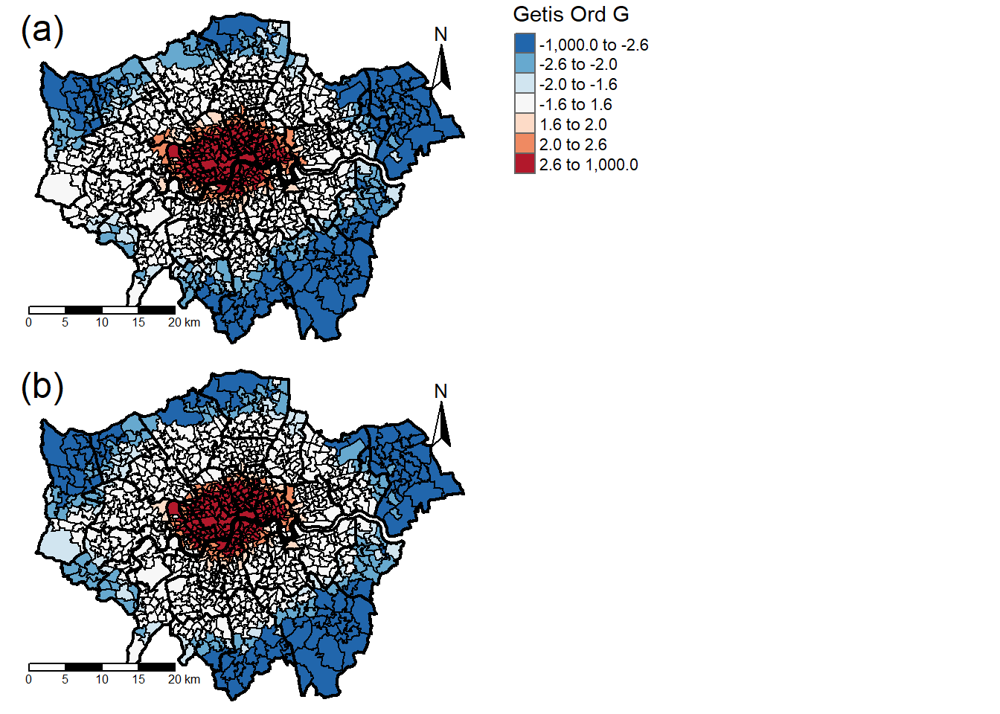

# List the full file paths of all the raster files.
PollutionFiles <- list.files("Data/Air Pollution/LAEI 2016 Concentrations", ".tif", full.names = TRUE)
# Stack the raster files into a single stack.
PollutionConc <- stack(PollutionFiles)
# List the raster names.
PollutionNames <- c("NO2", "PM2.5")
# Rename the raster files.
names(PollutionConc) <- PollutionNames
# Set BNG coordinate system.
BNG = "+init=epsg:27700"
# Set WGS84 coordinate system.
WGS84 = "+init=epsg:4326"
# Reproject raster stack into BNG.
PollutionConc <- projectRaster(PollutionConc, crs= WGS84)# Read in the London boundary.
OutlineLondon <- st_read("Data/Boundaries and Census/statistical-gis-boundaries-london/London_Boundary.shp")## Reading layer `London_Boundary' from data source `C:\Users\sammy\Desktop\Work\UCL\CASA0005 Geographic Information Systems and Science\Coursework\CASA0005 Coursework\Data\Boundaries and Census\statistical-gis-boundaries-london\London_Boundary.shp' using driver `ESRI Shapefile'
## Simple feature collection with 1 feature and 3 fields
## geometry type: POLYGON
## dimension: XY
## bbox: xmin: 503568.2 ymin: 155850.8 xmax: 561957.5 ymax: 200933.9
## epsg (SRID): NA
## proj4string: +proj=tmerc +lat_0=49 +lon_0=-2 +k=0.999601272 +x_0=400000 +y_0=-100000 +datum=OSGB36 +units=m +no_defs# Transform CRS into WGS84.
OutlineLondon <- st_transform(OutlineLondon, WGS84)
# Set extent to the London area.
ExtentLondon <- extent(OutlineLondon)
# Crop the rasters to the London outline.
CropNO2 <- crop(PollutionConc[[1]], OutlineLondon)
CropPM2.5 <- crop(PollutionConc[[2]], OutlineLondon)
# Mask rasters to the London outline.
MaskNO2 <- mask(PollutionConc[[1]], OutlineLondon, na.rm=TRUE)
MaskPM2.5 <- mask(PollutionConc[[2]], OutlineLondon, na.rm=TRUE)
# Stack the masked rasters.
PollutionLondon <- stack(MaskNO2, MaskPM2.5)# Read in boundaries as spatial polygons.
LAD <- st_read("Data/Boundaries and Census/statistical-gis-boundaries-london/London_Borough_Excluding_MHW.shp")## Reading layer `London_Borough_Excluding_MHW' from data source `C:\Users\sammy\Desktop\Work\UCL\CASA0005 Geographic Information Systems and Science\Coursework\CASA0005 Coursework\Data\Boundaries and Census\statistical-gis-boundaries-london\London_Borough_Excluding_MHW.shp' using driver `ESRI Shapefile'
## Simple feature collection with 33 features and 7 fields
## geometry type: MULTIPOLYGON
## dimension: XY
## bbox: xmin: 503568.2 ymin: 155850.8 xmax: 561957.5 ymax: 200933.9
## epsg (SRID): NA
## proj4string: +proj=tmerc +lat_0=49 +lon_0=-2 +k=0.999601272 +x_0=400000 +y_0=-100000 +datum=OSGB36 +units=m +no_defsMSOA <- st_read("Data/Boundaries and Census/statistical-gis-boundaries-london/MSOA_2011_London_gen_MHW.shp")## Reading layer `MSOA_2011_London_gen_MHW' from data source `C:\Users\sammy\Desktop\Work\UCL\CASA0005 Geographic Information Systems and Science\Coursework\CASA0005 Coursework\Data\Boundaries and Census\statistical-gis-boundaries-london\MSOA_2011_London_gen_MHW.shp' using driver `ESRI Shapefile'
## Simple feature collection with 983 features and 12 fields
## geometry type: MULTIPOLYGON
## dimension: XY
## bbox: xmin: 503574.2 ymin: 155850.8 xmax: 561956.7 ymax: 200933.6
## epsg (SRID): NA
## proj4string: +proj=tmerc +lat_0=49 +lon_0=-2 +k=0.999601272 +x_0=400000 +y_0=-100000 +datum=OSGB36 +units=m +no_defsLSOA <- st_read("Data/Boundaries and Census/statistical-gis-boundaries-london/LSOA_2011_London_gen_MHW.shp")## Reading layer `LSOA_2011_London_gen_MHW' from data source `C:\Users\sammy\Desktop\Work\UCL\CASA0005 Geographic Information Systems and Science\Coursework\CASA0005 Coursework\Data\Boundaries and Census\statistical-gis-boundaries-london\LSOA_2011_London_gen_MHW.shp' using driver `ESRI Shapefile'
## Simple feature collection with 4835 features and 14 fields
## geometry type: MULTIPOLYGON
## dimension: XY
## bbox: xmin: 503574.2 ymin: 155850.8 xmax: 561956.7 ymax: 200933.6
## epsg (SRID): NA
## proj4string: +proj=tmerc +lat_0=49 +lon_0=-2 +k=0.999601272 +x_0=400000 +y_0=-100000 +datum=OSGB36 +units=m +no_defs# Convert from an sp object to sf object.
SFLAD <- st_as_sf(LAD)
SFMSOA <- st_as_sf(MSOA)
SFLSOA <- st_as_sf(LSOA)
# Transform CRS to WGS84.
SFLAD <- st_transform(SFLAD, WGS84)
SFMSOA <- st_transform(SFMSOA, WGS84)
SFLSOA <- st_transform(SFLSOA, WGS84)
# Select relevent columns.
SFLAD <- SFLAD[,c(1, 2, 8)]
SFMSOA <- SFMSOA[,c(2, 1, 4, 3, 13)]
SFLSOA <- SFLSOA[,c(2, 1, 4, 3, 6, 5, 15)]
# Rename columns.
colnames(SFLAD) <- c("LAD Name", "LAD Code", "geometry")
colnames(SFMSOA) <- c("MSOA Name", "MSOA Code", "LAD Name", "LAD Code", "geometry")
colnames(SFLSOA) <- c("LSOA Name", "LSOA Code", "MSOA Name", "MSOA Code","LAD Name", "LAD Code", "geometry")# Read in Concentration data.
ConcLAD <- read_csv("Data/Air Pollution/ConcLAD.csv",
locale = locale(encoding = "latin1"),
na = "n/a")## Parsed with column specification:
## cols(
## `LAD Name` = col_character(),
## `LAD Code` = col_character(),
## `Mean NO2 Conc.` = col_double(),
## `Mean PM2.5 Conc.` = col_double()
## )ConcMSOA <- read_csv("Data/Air Pollution/ConcMSOA.csv",
locale = locale(encoding = "latin1"),
na = "n/a")## Parsed with column specification:
## cols(
## `MSOA Name` = col_character(),
## `MSOA Code` = col_character(),
## `LAD Name` = col_character(),
## `LAD Code` = col_character(),
## `Mean NO2 Conc.` = col_double(),
## `Mean PM2.5 Conc.` = col_double()
## )ConcLSOA <- read_csv("Data/Air Pollution/ConcLSOA.csv",
locale = locale(encoding = "latin1"),
na = "n/a")## Parsed with column specification:
## cols(
## `LSOA Name` = col_character(),
## `LSOA Code` = col_character(),
## `MSOA Name` = col_character(),
## `MSOA Code` = col_character(),
## `LAD Name` = col_character(),
## `LAD Code` = col_character(),
## `Mean NO2 Conc.` = col_double(),
## `Mean PM2.5 Conc.` = col_double()
## )# Extract relevent columns.
ConcLAD <- ConcLAD[,c(2:4)]
ConcMSOA <- ConcMSOA[,c(2, 5, 6)]
ConcLSOA <- ConcLSOA[,c(2, 7, 8)]
# Round concentration
ConcLAD[, c(2, 3)] <- round(ConcLAD[, c(2, 3)], digits = 3)
ConcMSOA[, c(2, 3)] <- round(ConcMSOA[, c(2, 3)], digits = 3)
ConcLSOA[, c(2, 3)] <- round(ConcLSOA[, c(2, 3)], digits = 3)
# Merge ID data to boundaries.
SFLAD<-merge(SFLAD,
ConcLAD,
by.x="LAD Code",
by.y="LAD Code",
no.dups = TRUE,
all.x = TRUE)
SFMSOA<-merge(SFMSOA,
ConcMSOA,
by.x="MSOA Code",
by.y="MSOA Code",
no.dups = TRUE,
all.x = TRUE)
SFLSOA<-merge(SFLSOA,
ConcLSOA,
by.x="LSOA Code",
by.y="LSOA Code",
no.dups = TRUE,
all.x = TRUE)# Convert SF objects into SP objects
SPAreaCluster <- as(SFMSOA, "Spatial")
# Determine centroids for MSOAs
CentroidMSOA <- coordinates(SPAreaCluster)
plot(CentroidMSOA)# Create neighbour list using queen's case neighbours.
NNListMSOA <- poly2nb(SFMSOA, queen=T)
plot(NNListMSOA, coordinates(CentroidMSOA), col="red")# Create spatial weights object.
SpWeightsMSOA <- nb2listw(NNListMSOA, style="C")
# Conduct global Moran's I.
GlbGGNO2 <- globalG.test(SPAreaCluster@data$Mean.NO2.Conc., SpWeightsMSOA)
GlbGGPM2.5 <- globalG.test(SPAreaCluster@data$Mean.PM2.5.Conc., SpWeightsMSOA)
# Conduct local Moran's I.
lclGGNO2 <- round(localG(SPAreaCluster@data$Mean.NO2.Conc. , SpWeightsMSOA), digits = 3)
lclGGPM2.5 <- round(localG(SPAreaCluster@data$Mean.PM2.5.Conc. , SpWeightsMSOA), digits = 3)
# Join local Moran's I Z values to shape file.
SPAreaCluster$lclGGNO2 <- lclGGNO2
SPAreaCluster$lclGGPM2.5 <- lclGGPM2.5
# Convert SP MSOA data into a data frame.
SFAreaCluster <- st_as_sf(SPAreaCluster)
# Rename columns.
colnames(SFAreaCluster) <- c("MSOA Code","MSOA Name", "LAD Name","LAD Code", "Mean NO2 Conc.", "Mean PM2.5 Conc.", "NO2 Getis Ord G", "PM2.5 Getis Ord G", "geometry")
# Subset Data
SFAreaCluster_NO2 <- SFAreaCluster[, c(2, 5, 7, 9)]
SFAreaCluster_PM2.5 <- SFAreaCluster[, c(2, 6, 8, 9)]
# Rename columns.
colnames(SFAreaCluster_NO2) <- c("MSOA Name", "Mean Conc. (µg/m3)", "Getis Ord G", "geometry")
colnames(SFAreaCluster_PM2.5) <- c("MSOA Name", "Mean Conc. (µg/m3)", "Getis Ord G", "geometry")
# Moran's I breaks.
BrksMi <-c(-1000,-2.58,-1.96,-1.65,1.65,1.96,2.58,1000)
# Moran's I palette.
PalMi<- rev(brewer.pal(7, "RdBu"))
# Map Conc.
Mean_NO2_Conc <- tm_shape(SFAreaCluster_NO2) +
tm_polygons(col = "Mean Conc. (µg/m3)",
palette = "seq",
breaks = c(0, 10, 20, 30, 40, 50, 60, 70, 80),
midpoint = 40,
legend.hist=TRUE)+
tm_shape(LAD) +
tm_polygons(col = NA, alpha = 0, border.col = "black", lwd = 2.0) +
tm_shape(MSOA) +
tm_polygons(col = NA, alpha = 0, border.col = "black", lwd = 1.0)+
tm_layout(aes.palette = list(seq = "-RdYlBu"),
main.title = "Mean NO2 Concentration for London MSOAs",
main.title.size = 1.2,
legend.outside = TRUE,
legend.outside.position = "right")+
tm_scale_bar(position = c("left", "bottom"))+
tm_compass(north = 0,
position = c("right", "top"))
Mean_NO2_Conc## Warning: The shape SFAreaCluster_NO2 is invalid. See sf::st_is_valid## Warning: The shape MSOA is invalid. See sf::st_is_validMean_PM2.5_Conc <- tm_shape(SFAreaCluster_PM2.5) +
tm_polygons(col = "Mean Conc. (µg/m3)",
palette = "seq",
breaks = c(0, 2.5, 5.0, 7.5, 10, 12.5, 15.0, 17.5, 20),
midpoint = 10,
legend.hist=TRUE)+
tm_shape(LAD) +
tm_polygons(col = NA, alpha = 0, border.col = "black", lwd = 2.0) +
tm_shape(MSOA) +
tm_polygons(col = NA, alpha = 0, border.col = "black", lwd = 1.0)+
tm_layout(aes.palette = list(seq = "-RdYlBu"),
main.title = "Mean PM2.5 Concentration for London MSOAs",
main.title.size = 1.2,
legend.outside = TRUE,
legend.outside.position = "right")+
tm_scale_bar(position = c("left", "bottom"))+
tm_compass(north = 0,
position = c("right", "top"))
Mean_PM2.5_Conc## Warning: The shape SFAreaCluster_PM2.5 is invalid. See sf::st_is_valid
## Warning: The shape MSOA is invalid. See sf::st_is_valid# Map Getis G.
Mean_NO2_GetisG <- tm_shape(SFAreaCluster_NO2) +
tm_polygons(col = "Getis Ord G",
palette = PalMi,
breaks = BrksMi,
midpoint = 0)+
tm_shape(LAD) +
tm_polygons(col = NA, alpha = 0, border.col = "black", lwd = 2.0) +
tm_shape(MSOA) +
tm_polygons(col = NA, alpha = 0, border.col = "black", lwd = 1.0)+
tm_layout(aes.palette = list(seq = "-RdYlBu"),
frame = FALSE)+
tm_legend(show = FALSE)+
tm_scale_bar(position = c("left", "bottom"))+
tm_compass(north = 0, position = c("right", "top"))+
tm_credits("(a)", position=c(0,0.85), size=1.5)
Mean_PM2.5_GetisG <- tm_shape(SFAreaCluster_PM2.5) +
tm_polygons(col = "Getis Ord G",
palette = PalMi,
breaks = BrksMi,
midpoint = 0)+
tm_shape(LAD) +
tm_polygons(col = NA, alpha = 0, border.col = "black", lwd = 2.0) +
tm_shape(MSOA) +
tm_polygons(col = NA, alpha = 0, border.col = "black", lwd = 1.0)+
tm_layout(aes.palette = list(seq = "-RdYlBu"),
frame = FALSE)+
tm_legend(show = FALSE)+
tm_scale_bar(position = c("left", "bottom"))+
tm_compass(north = 0,
position = c("right", "top"))+
tm_credits("(b)", position=c(0,0.85), size=1.5)
Mean_GetisG_Legend <- tm_shape(SFAreaCluster_PM2.5) +
tm_polygons(col = "Getis Ord G",
palette = PalMi,
breaks = BrksMi,
midpoint = 0)+
tm_layout(legend.only = TRUE, legend.position=c(0,0.5),asp=0.1)
Mean_GetisG <- tmap_arrange(Mean_NO2_GetisG, Mean_GetisG_Legend, Mean_PM2.5_GetisG, ncol=2, nrow = 2)
Mean_GetisG## Warning: The shape SFAreaCluster_NO2 is invalid. See sf::st_is_valid
## Warning: The shape MSOA is invalid. See sf::st_is_valid## Warning: The shape SFAreaCluster_PM2.5 is invalid. See sf::st_is_valid
## Warning: The shape SFAreaCluster_PM2.5 is invalid. See sf::st_is_valid## Warning: The shape MSOA is invalid. See sf::st_is_valid